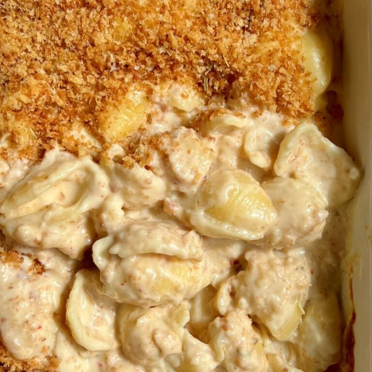

Mac & Cheese


Zutaten:
(3 Portionen)
| 400 g | große Muschel-Nudeln (oder eine Nudelform nach Wahl) |
| 1 | Knoblauchknolle |
| 3 El | Butter |
| 45 g | Mehl |
| 650 ml | Milch |
| 200 ml | Sahne |
| 1 cup | Parmigiano Reggiano, gerieben |
| 1 cup | Cheddar (scharf), gerieben |
| 1 El | Paprika |
| 1 El | Chiliflocken (nach Geschmack anpassen) |
| nach Geschmack | Salz und Pfeffer |
Breadcrumb-Kruste:
| 120 g | Panko-Brösel |
| 2 El | Butter |
| 1 Tl | Rosmarin |
| Salz |
Schritte der Anleitung:
- Schneide den oberen Teil deiner Knoblauchknolle ab und lege sie auf ein Stück Alufolie.
- Olivenöl und Salz einsprühen und die Folie fest verschließen.
- Im Ofen oder in der Luftfritteuse bei 190C für 45 Minuten oder bis goldbraun.
- Bereite deine Breadcrumb-Kruste vor, indem du alle Zutaten in eine Pfanne gibst und röstest bis die Brotkrumen goldbraun sind.
- Bring einen Topf mit gesalzenem Wasser zum Kochen und koche deine Pasta leicht unter al dente.
- In der Zwischenzeit bereite deine Käsesoße vor.
- Schmelze in einem Topf bei schwacher bis mittlerer Hitze deine Butter und füge das Mehl hinzu.
- Sofort schlagen, um Klumpen zu entfernen und 1-2 Minuten weiter kochen, um den Mehlgeschmack loszuwerden.
- Langsam, Stück für Stück, fügen Sie Ihre Milch hinzu und rühren Sie ständig, bis die Mischung dick ist. Schalten Sie die Hitze ab, fügen Sie Sahne, Käse, Gewürze, gebratenen Knoblauch, Salz und Pfeffer hinzu und mischen Sie gut, bis der Käse geschmolzen ist.
- Nudeln hinzugeben, umrühren und in eine Backform geben
- Über die gerösteten Brotkrumen streuen und bei 180 für 25-30 Minuten backen. Servieren.